Build and launcher | Capture identity and crop bounds
Lossless, unscaled 400x400 crops from the actual native renderer. Click an image for the complete capture. Before and after use the same warehouse fixture and collision. Other cases exercise shared depth metadata and existing independent roof cutaways.
Scope: actor/facade ordering. These images do not accept overall art quality, lighting, the full escape mission or performance.
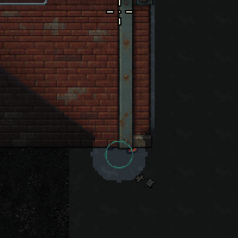
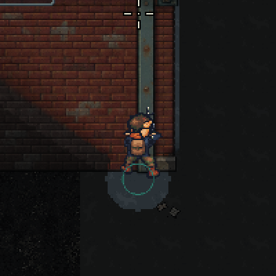
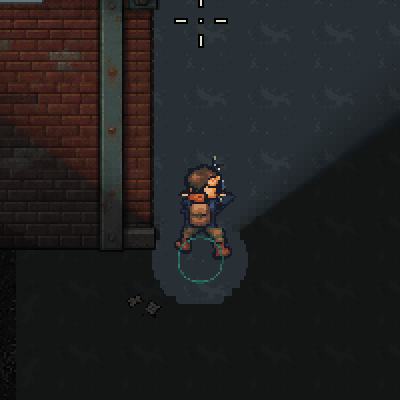
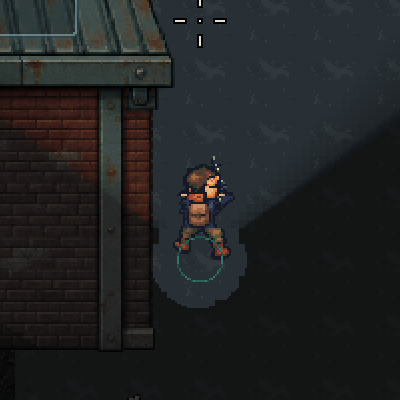
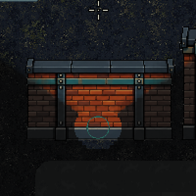
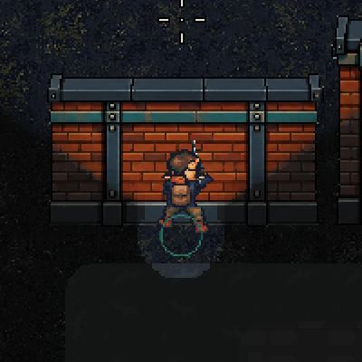
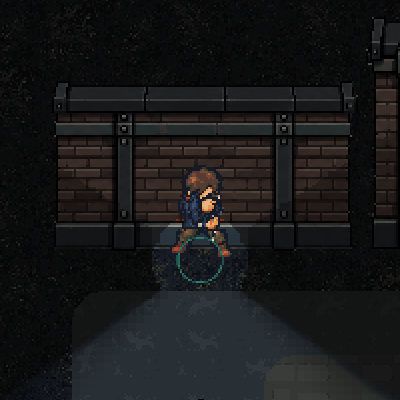
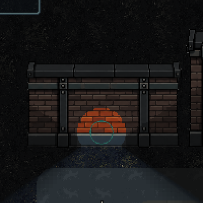
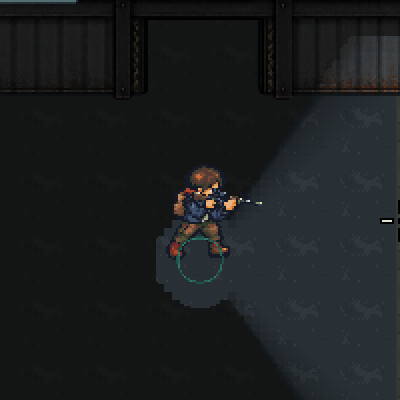
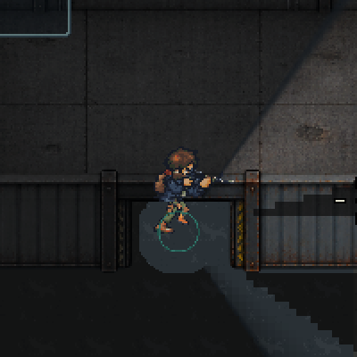
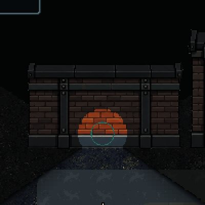